Web TesterはWebアプリケーションの自動テストツールです。作成されたテストスクリプトに従いブラウザを自動操作します。Web Testerの特徴を以下に挙げます。
-
テストスクリプトを専用のGUIツールで作成できます。
このため作成にプログラミングスキルは不要で、データパターンの複製も簡単です。 -
実行した画面操作に対して自動でエビデンス（スクリーンショットと操作ログ)を取得できます。
スクリーンショットには操作した画面項目が赤枠つきで表示されるため、ツールの操作が一目でわかります。 -
ブラウザの操作にはSelenium WebDriverを使用しています。
このため対応ブラウザはSelenium WebDriverと同等のものが使用できます。 -
テストはCLIからも実行できます。このためJenkinsのジョブが簡単に作成できます。
Web Testerを使用する手順はクイックスタートを参照してください。
クイックスタート
GUIツール(sit-wt-app.jar)を使ってテストプロジェクトとテストスクリプトを作成します。
同梱のサンプルWebサイトとテストスクリプトで直ぐに動かすことができます。
※実行にはJava11が必要となります。
-
jarファイルをダウンロードします。
-
ダウンロードしたjarファイルをダブルクリックで実行するとGUIツールが起動します。以降はGUIツールの操作です。
-
テストプロジェクトを作成するフォルダを選択します。
-
Sample メニュー > Start を選択します。サンプルWebサイトが起動し、サンプルテストスクリプトが生成されます。
-
生成されたサンプルテストスクリプトが画面左の testscriptフォルダ 内にあるので選択します。
-
Test メニュー > Run (または Debug) を選択し、テストを実行します。
※JNIエラーダイアログが表示される場合は、古いバージョンのJavaを使用している可能性があります。
「sit-wt-app.jar」のプロパティを開き、「Opens with」をJava 11の「javaw.exe」に変更して下さい。
CLIでのテスト実行
テストプロジェクトでテストスクリプトを一度に実行するには、CLIツール（Mavenプラグイン）を使用します。
以下はCLIでサンプルWebサイトのテストを実行する手順です。
-
GUIツールを起動し、サンプルWebサイトを起動します。
-
以下に示すコマンドを実行します。使用OSのコマンドを参照して下さい。
Windows
cd \path\to\testproject mvnw verify -DbaseUrl=http://localhost:8280 mvnw sit-wt:open-report
macOS
cd /path/to/testproject ./mvnw verify -DbaseUrl=http://localhost:8280 ./mvnw sit-wt:open-report
Learn More
クイックスタートは以上です。
次は実際にテストスクリプトを作成し、自動テストを動かしてみてください。
また、Web Testerには自動テストを行うための便利な機能がたくさんあります。
以下の項目を参照し、是非試してみてください。
-
こちらで仕様を参照しながら、テストスクリプトを作成してみてください。
-
テストが想定外の動きをした際の原因特定には、デバッグ機能が有用です。
-
Chrome以外のブラウザでもテストが実行できます。
-
Selenium IDEを使用し、ブラウザ操作からテストスクリプトを作成することができます。
-
Web TesterをJenkinsで実行することができます。
テストスクリプトの仕様
SIT-WTが実行するブラウザ操作はテストスクリプトと呼ばれるファイルに表形式のデータとして定義します。ファイルはMicrosoft ExcelまたはCSVで作成します。表形式のデータの1行ごとに、ブラウザ操作、操作に使用するテストデータ、スクリーンショットを撮るタイミング等を定義します。表形式データの各列の入力仕様を以下に挙げます。
-
No.
スクリプト番号を記入します。スクリプト番号は操作ログに出力され、これによりテストスクリプトの1行と操作ログを紐づけて確認できるようになります。任意の文字列が記入可能ですが、紐づけがわかるよう一意となるように記入してください。
-
項目名
操作項目の名前を記入します。項目名は操作ログに出力されます。
-
操作
項目に対するブラウザ操作、及び、DBの検証データを記入します。詳細
-
ロケーター形式
「ロケーター」を解釈する方法を記入します。有効な値はcss、id、name、link、tag、xpathのいずれかです。省略した場合はidが適用されます。詳細
-
ロケーター
ブラウザ操作の場合、項目を画面上で特定するための識別子を入力します。識別子は「ロケーター形式」に従います。
DB検証の場合は、検証に使用するSQLファイルを指定します。 -
データ形式
「テストデータ」を解釈する方法を入力します。入力可能な値は「操作」によって異なります。
-
スクリーンショット
画面のスクリーンショットを取得するタイミングを入力します。入力可能な値は「前」「後」「前後」です。
-
ブレークポイント
デバッグモードでテストを実行中に一時停止させたい場合に入力します。入力する値は任意です(空か否かを判定しています)。デバッグモードについてはこちらを参照してください。
-
テストデータ
「操作」に使用するテストデータを入力します。空にした場合、その行のテストスクリプトは実行しません。click操作等、テストデータを使用しない操作の場合は「y」を入力してください。
列名は「"ケース_" + 数字」の書式で指定します。
Excelの数式機能
テストスクリプトをExcelで作成する場合、いずれのセルでも数式、関数を使用することができます。例えば以下の様にNo.列に「="STEP_"&(ROW()-1)」と入力すれば、テスト実行時、およびエビデンスではSTEP_1、STEP_2、STEP_3と数式の演算結果が使用されます。
| No. | 項目名 |
|---|---|
="STEP_"&(ROW()-1) |
|
="STEP_"&(ROW()-1) |
|
="STEP_"&(ROW()-1) |
テストスクリプトの実行順序
テストスクリプトが実行される順序を説明します。テストスクリプトが以下の様に定義されているとします。
| 項目名 | 操作 | ケース_01 | ケース_02 |
|---|---|---|---|
テキストボックス1 |
input |
a |
i |
テキストボックス2 |
input |
b |
j |
このときの実行順序は以下の様になります。
-
テキストボックス1にaを入力
-
テキストボックス2にbを入力
-
ケース_01の操作ログを出力
-
テキストボックス1にiを入力
-
テキストボックス2にjを入力
-
ケース_02の操作ログを出力
つまり、テストスクリプトはケースごとに上から下に向かって実行されます。また、ケース単位で操作ログがファイルに出力されます。
操作の仕様
テストスクリプトの「操作」列に入力可能な値と、その時の挙動、他の列の値との関連を以下に挙げます。
| 操作 | 仕様 |
|---|---|
choose |
ロケーターで特定したラジオボタン、チェックボックスの選択操作を行います。使用例 |
click |
ロケーターで特定した要素をクリックします。 |
dbverify |
ロケーターで指定したSQLを実行し、DBに格納された値がテストデータで指定した期待値と一致するか否かを確認できます。使用例 |
dialog |
JavaScriptのalert、confirm、prompt関数で表示されるダイアログを操作します。テストデータに「true」、「ok」、「y」の何れかが入力されていた場合はダイアログの「OK」ボタンをそうでない場合は「キャンセル」ボタンをクリックします。テストデータの大文字小文字は区別しません。 |
drawLine |
ロケーターで特定したcanvas上に2点間の直線を引く操作を行います。2点の座標はテストデータに数字を「:(半角コロン)」または「:(半角セミコロン)」区切りで入力します。4つの数字が入力されている場合は左から順に、始点x、始点y、終点x、終点yと解釈します。2つの数字の場合は、最後の操作の終点を始点として終点x、終点yと解釈します。 |
exec |
ロケーターに指定された文字列をOSのコマンドとして実行します。例えばロケーターに「cmd /c mkdir testdir」が指定された場合、操作を実行するとカレントディレクトリにtestdirという名前のディレクトリが作成されます。OSのコマンドが0以外の終了コードで終了した場合はテスト失敗とみなします。 |
goto |
テストデータで指定されるケース番号からテストスクリプトの実行をやり直します。 |
include |
別ファイルのテストスクリプトを実行します。ファイルのパスはロケーターに指定された値を使用します。パスは{project}/pagescriptからの相対パスとして解釈します。使用例 |
input |
ロケーターで特定した要素にテストデータの文字列を入力します。要素に既に文字列が入力されていた場合、文字列は削除され、テストデータの文字列で上書きされます。追記する場合は、テストデータの先頭に「append:」を付けてください。 |
key |
ロケーターで指定した要素に、テストデータで指定したキーボード操作を実行します。shift、ctrl等の特殊なキーは前置詞"key_"で定義します。複数のキーを押下する場合、":|;"で分割します。(例：shift+aを押下する場合、テストデータには"key_shift:a"を定義) |
open |
ロケーターで指定されるURLのページを表示します。ロケーターにはhttp(s)から始まる絶対パス、またはbaseUrlからの相対パスが指定できます。ここでbaseUrlはVM引数で指定します。ロケーター、baseUrlのいずれもhttp(s)で始まらない場合、URLはファイルプロトコルとして解釈されます。 |
select |
ロケーターで特定したセレクトボックスの選択操作を行います。 |
setWindowSize |
ブラウザのウィンドウサイズを変更します。変更するサイズはテストデータにカンマ区切りで指定します。(例：200,300) |
store |
ロケーターに変数名、テストデータに変数値を指定することで、変数に値を格納します。定義した変数はロケーターまたはテストデータ内で#{params['変数名']}で使用することができます。使用例 |
storeElementIndex |
ロケーターに指定した要素の順序情報を、データ形式で指定した変数に格納します。定義した変数は、ロケーターまたはテストデータ内で#{params['変数名']}で使用することができます。使用例 |
switchWindow |
ロケーターで指定されるウィンドウをアクティブにします。親ウィンドウをアクティブにする場合はロケーターを空にするか「_parent」を入力してください。 |
switchFrame |
ロケーターで特定したフレームをアクティブにします。親フレームをアクティブにする場合はロケーター形式を空にしてください。 |
verify |
ロケーターで特定した要素内の文字列がテストデータに一致するか否かを確認します。テストデータを「regexp:」で始めると、正規表現にマッチするか否かを確認できます。 |
verifySelect |
ロケーターで特定したセレクトボックスで選択した要素がテストデータに一致するか否かを確認します。複数選択セレクトボックスを確認する場合、テストデータにはカンマ区切りで複数の値を入力してください。 |
wait |
ロケーターで特定した要素にテストデータの文字列が表示されるまで最大で1秒間待機します。 |
choose操作の使用例
choose操作の使用例を挙げます。以下の様な2択のラジオボタンとそれを実装するHTMLがあるとします。
○はい ○いいえ
<input id="yorn-yes" type="radio" name="yorn" value="1"/> <label for="yorn-yes">はい</label> <input id="yorn-no" type="radio" name="yorn" value="0"/> <label for="yorn-no">いいえ</label>
この時、以下のテストスクリプトの1~3はいずれも、「はい」のラジオボタンを選択することができます。
| 操作 | ロケーター形式 | ロケーター | データ形式 | ケース_01 | |
|---|---|---|---|---|---|
1 |
click |
id |
yorn-yes |
y |
|
2 |
choose |
name |
yorn |
1 |
|
3 |
choose |
name |
yorn |
label |
はい |
次にチェックボックスでの使用例を挙げます。以下の様な3択のチェックボックスとそれを実装するHTMLがあるとします。
□A □B □C
<input id="abc-a" type="checkbox" name="abc" value="a"/> <label for="abc-a">A</label> <input id="abc-b" type="checkbox" name="abc" value="b"/> <label for="abc-b">B</label> <input id="abc-c" type="checkbox" name="abc" value="c"/> <label for="abc-c">C</label>
この時、テストデータに指定する値と操作前後のチェックボックスの状態は以下の様になります。
| 操作前の状態 | データ形式 | テストデータ | 操作後の状態 | |
|---|---|---|---|---|
1 |
□A □B □C |
a;c |
■A □B ■C |
|
2 |
□A □B □C |
label |
A;C |
■A □B ■C |
3 |
■A □B □C |
label |
A |
■A □B □C |
4 |
■A □B □C |
label |
A_off |
□A □B □C |
複数のチェックボックスを操作する場合はテストデータを「:」または「;」で区切ります(1,2)。 操作前にチェックが入っている選択肢をテストデータに指定した場合、チェックは外れずに残ります(3)。 チェックを外す場合はテストデータの末尾に「_off」を付与します。
dbverify操作
DB接続設定
dbverify操作を行う場合、pom.xmlへのJDBCドライバの設定追加と、DB接続情報の設定ファイル作成（src/main/resources/db/connection.properties）が必要となります。
-
pom.xmlへの設定追加
<dependency> <groupId>org.apache.derby</groupId> <artifactId>derbyclient</artifactId> <version>10.13.1.1</version> </dependency> -
DB接続情報
jdbc.url=jdbc:derby://localhost:1527/testdb jdbc.username=app jdbc.password=app jdbc.driver=org.apache.derby.jdbc.EmbeddedDriver
※各種設定値は実際のDBの接続情報としてください。上記設定例はDBがDerbyである場合の設定値となります。
使用例
dbverify操作の使用例を記載します。検証対象のDBに以下のテーブル・レコードが存在する状態とします。
-
テーブル：tab1
| id | col1 | col2 |
|---|---|---|
001 |
111 |
222 |
002 |
111 |
333 |
上記テーブル・レコードを作成するDDL・DMLは以下です。
/*** DDL ***/
CREATE TABLE tab1 (
ID char(3) PRIMARY KEY,
col1 char(3),
col2 char(3)
);/*** DML ***/
INSERT INTO tab1 (
ID, col1, col2
) VALUES (
'001',
'111',
'222'
),
(
'002',
'111',
'333'
);検証に使用するSQL・テストスクリプトを以下のように作成します。SQLはテストスクリプトのロケーターで指定します。SQLではバインド変数を":変数名"で指定できます。
-
db/verify_1.sql
SELECT col1, col2 FROM tab1 WHERE id = :id-
db/verify_2.sql
SELECT id, col1, col2 FROM tab1 WHERE col2 = :col2-
テストスクリプト
| # | 操作 | ロケーター | テストデータ |
|---|---|---|---|
db-1 |
dbverify |
db/verify_1.sql |
"param" : { "id" : "001" }, "verify" : { "col1" : "111" } |
db-2 |
dbverify |
db/verify_2.sql |
"param" : { "col2" : "333" }, "verify" : { "id" : "002" , "col1" : "111" } |
テストデータはJSONフォーマットでの記述となっており、"param"にSQLのバインド変数、"verify"に検証カラムと期待値をそれぞれ定義します。テストデータ中に記述するバインド変数名は、":"は不要です。
上述のテストスクリプトの場合、下記の通りの検証を行います。
-
db-1
id="001"のレコードのcol1カラムに"111"が格納されていること
-
db-2
col2="333"のレコードのidカラムに"002"、col1カラムに"111"が格納されていること
include操作
include操作の使用例を挙げます。 実行するテストスクリプト：MainSenario.xlsxとそこから呼び出されるテストスクリプト：Page1Script.xlsxが以下の様に配置されているとします。
project
pagescript
Page1Script.xlsx
testscript
MainSenario.xlsx
それぞれのテストスクリプトの内容は以下の通りです。
-
testscript/MainSenario.xlsx
| # | 操作 | ロケーター | ケース_1 |
|---|---|---|---|
main-1 |
open |
||
main-2 |
include |
Page1Script.xlsx |
a |
main-3 |
click |
nextButton |
y |
-
pagescript/Page1Script.xlsx
| # | 操作 | ロケーター | ケース_a |
|---|---|---|---|
page1-1 |
input |
textbox1 |
abc |
page1-2 |
input |
textbox2 |
efg |
この時のテストステップの実行順序は以下の通りです。
-
main-1
-
main-2
-
page1-1
-
page1-2
-
main-3
store操作
store操作の使用例を挙げます。
| No. | 操作 | ロケーター形式 | ロケーター | ケース_1 |
|---|---|---|---|---|
1 |
store |
key |
value |
|
2 |
input |
id |
someTxt |
#{params['key']} |
3 |
click |
link |
X_#{params['key']} |
y |
上のテストスクリプトは以下の様に処理されます。
-
「key」というパラメーターに「value」という値を格納
-
ロケーターがid=someTxtである項目に「value」を入力
-
ロケーターがlink=X_valueである項目をクリック
storeElementIndex操作
storeElementIndex操作の使用例を挙げます。 以下の様なテーブルとそれを実装するHTMLがあるとします。
| No. | 名前 | 選択 |
|---|---|---|
1 |
Test1 |
[選択] |
2 |
Test2 |
[選択] |
3 |
Test3 |
[選択] |
※"[選択]"はボタン
<table class="list">
<thead>
<tr>
<th>No.</th>
<th>名前</th>
<th>選択</th>
</tr>
</thead>
<tbody>
<tr>
<td>1</td>
<td>Test1</td>
<td><button onclick="select(1)">選択</button></td>
</tr>
<tr>
<td>2</td>
<td>Test2</td>
<td><button onclick="select(2)">選択</button></td>
</tr>
<tr>
<td>3</td>
<td>Test3</td>
<td><button onclick="select(3)">選択</button></td>
</tr>
</tbody>
</table>
<script>
function select(no) {
alert(no + "を選択しました");
}
</script>以下のテストスクリプトを実行すると、Test2の選択ボタンがクリックされます。
| 操作 | ロケーター形式 | ロケーター | データ形式 |
|---|---|---|---|
storeElementIndex |
xpath |
//table[@class="list"]/tbody/tr/td[text()="Test2"]/.. |
idx |
click |
xpath |
//table[@class="list"]/tbody/tr[#{params['idx']}]/td/button |
ロケーター
ロケーターとは、SIT-WTがブラウザを操作する際に、HTMLの中からDOM要素を特定するために使用する識別子です。
| ロケーター形式 | 仕様 |
|---|---|
id |
id属性でDOM要素を特定します。 |
css |
CSSセレクタでDOM要素を特定します。 |
name |
name属性でDOM要素を特定します。ラジオボタンやチェックボックス等、同一のname属性をもつ複数要素を操作する場合にchoose操作と併せて使用します。 |
link |
リンクの文字列(aタグのテキスト要素)でDOM要素を特定します。 |
tag |
HTMLタグでDOM要素を特定します。 |
xpath |
XpathでDOM要素を特定します。 |
SQLファイル名 |
DB検証を行う場合、検証に使用するSQLファイルを指定します。 |
SIT-WTでのロケーターはロケーターとSeleniumでの同義です。Selenium IDEでは「ロケーター形式=ロケーター」の様に「=」で連結したものを1つのロケーターとして入力しするのに対し、SIT-WTではロケーター形式とロケーター文字列を分けて入力します。
ブラウザ操作をテストスクリプトに記録する
SIT-WT単独ではキャプチャーリプレイ機能（ブラウザ操作を記録して再生する機能)を持っていません。その代替手段として、キャプチャーリプレイ機能を持ったSelenium IDE のテストスクリプトをSIT-WTの形式に変換する機能を提供しています。 ここではこの変換機能について説明します。
1. テストスクリプトの作成
Selenium IDEを使用してテストスクリプトを作成します。 テストスクリプトはプロジェクトルート(1)、またはseleniumscriptディレクトリ(2)に保存します。プロジェクトルートとは、クイックスタートで取得するpom.xmlを配置したディレクトリです。 保存はHTML形式とし拡張子はhtmlとしてください。
project_root
- pom.xml
- SeleniumIDETestScript.html <- (1)
or
- seleniumscript
- SeleniumIDETestScript.html <- (2)
2-a. Selenium IDEのテストスクリプトを実行する場合
ターミナルウィンドウ(Windowsではコマンドプロンプト、Macではターミナル)を起動し、以下のコマンドを実行します。
cd project_root mvn verify
2-b. テストスクリプトの変換機能のみを実行する場合
ターミナルウィンドウ(Windowsではコマンドプロンプト、Macではターミナル)を起動し、以下のコマンドを実行します。
cd project_root mvn sit-wt:selenium2script
コマンドの実行が終わると、プロジェクトルート以下のtarget/testscriptディレクトリにSIT−Wt形式のテストスクリプトが作成されます。
project_root
- pom.xml
- target
- testscript
- SeleniumIDETestCase.xlsx
注意事項
この機能は、Selenium IDEで作成できるあらゆるスクリプトに対して変換を保障するものではありません。キャプチャーリプレイの代替手段としての位置付けであるため、ブラウザ操作で記録できる範囲のコマンドのみ変換をサポートします。
デバッグ機能
デバッグ機能は、テスト実行を一時停止したりテストスクリプトを1行ずつ実行する機能です。 テストスクリプトが想定通りに動かない場合の原因調査に役立ちます。
使用方法
デバッグ機能を使用するには、テスト実行時のMavenコマンドに「-P debug」オプションを追加します。
mvn verify -P debug
このオプションによりデバッグモードでテストが実行されます。 特定のテストケースのみをデバッグ実行する場合はMavenコマンドに「-Dit.test=XxxxIT#xxx」オプションを追加します。 例えば「GitHub.xlsx」というテストスクリプトの「ケース_001」を実行する場合のコマンドは以下のようになります。
mvn verify -P debug -Dit.test=GitHubIT#test001
デバッグモードで実行中は、以下のいずれかの条件でテスト実行が一時停止します。
-
ブレークポイントが設定されたテストステップ
-
テストケース終了後
-
コンソールウィンドウでEnterキーがタイプされた時
-
テスト実行中に例外発生
一時停止中はコンソールウィンドウでコマンドを受け付けるようになります。コマンドは「キー入力 + Enterキー」で実行します。 使用できるコマンドとその機能は以下の通りです。
| コマンド | 機能 |
|---|---|
s |
テスト実行を再開します。 |
b |
テストステップを1つ戻します。 |
c |
現在のテストステップを実行します。 |
f |
次のテストステップを実行します。 |
! |
! [0]と入力するとNo.[0]のテストステップを実行します。 |
# |
# [0]と入力するとNo.[0]のテストステップから開始するように設定します。 |
e |
テストスクリプトを作成します。 |
l |
l [0] [1]と入力するとロケーター書式[0]、値[1]に該当する要素を検出します。 |
p |
ストアされているパラメーターを表示します。 |
i |
i [0] [1]と入力すると、名前[0]、値[1]のパラメーターをストアします。 |
o |
現在実行中のテストスクリプトを開きます。 |
q |
テスト実行を終了します。 |
ブレークポイント
テストスクリプトの「ブレークポイント」列に値を入力すると、その行でテスト実行を一時停止します。 値は任意の文字で入力可能です。 ブレークポイントはデバッグモードで実行中の場合のみ有効です。
例) 以下のテストスクリプトではNo.2のテストステップ実行前に一時停止します。
| No. | 項目 | 操作 | ブレークポイント |
|---|---|---|---|
1 |
開始URL |
open |
|
2 |
名前 |
input |
y |
3 |
性別 |
choose |
テストスクリプトの変更の再読み込み
一時停止中にテストスクリプトの内容を変更して保存すると、変更後の内容でテストスクリプトが実行されます。 ただしケースの追加は反映されません。
ウィンドウの整列
デバッグモードでは、以下のようにウィンドウを整列すると操作しやすくなります。
以下の操作でアクティブウィンドウを画面の指定方向に寄せることができます。
-
Windiws
「Windowsキー」 + 「方向キー」
-
Mac OS X (アプリ：Shiftitを使用)
「Control」 + 「alt」 + 「Command」 + 「方向キー」
スクリーンショット比較機能
スクリーンショット比較機能は、テスト実行後に生成したエビデンスの全スクリーンショットを、あらかじめ基準として用意したエビデンスと比較する機能です。 一度基準のエビデンスを確定すれば、スクリーンショットの検証を自動で実施することができます。
なお、以降は基準となるエビデンスのことを基準エビデンスと表記します。
スクリーンショット比較機能の実行
基準エビデンスを確定し、スクリーンショット比較機能を実行する一連の手順です。ここでは例として、サンプルWebサイトを使います。
-
ボタンをクリックし、サンプルWebサイトを起動します。
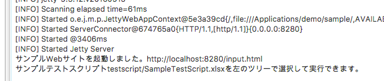 -
SampleTestScriptを選択した状態でボタンをクリックし、テストを実行します。
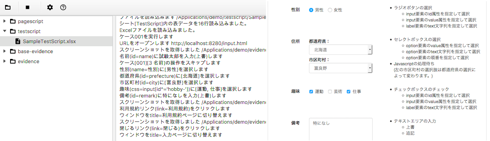 -
2で作成されたエビデンスディレクトリを選択してボタンをクリックし、基準エビデンスとして確定します。
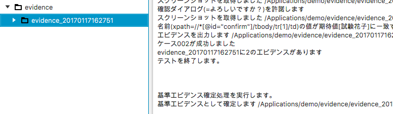 -
スクリーンショット比較機能を有効にするトグルボタンをONにし、2と同様のケースのテストを実行します。テスト終了後は、生成したエビデンスの全スクリーンショットと基準エビデンスとの比較が、自動で実行されます。
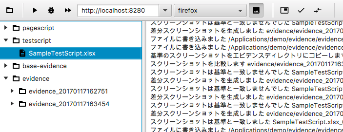また、不一致となるスクリーンショットがあった場合は、比較エビデンスが生成・表示されます。 比較エビデンスとは、2つのエビデンスのスクリーンショットを横に並べて目視で確認しやすくしたエビデンスです。
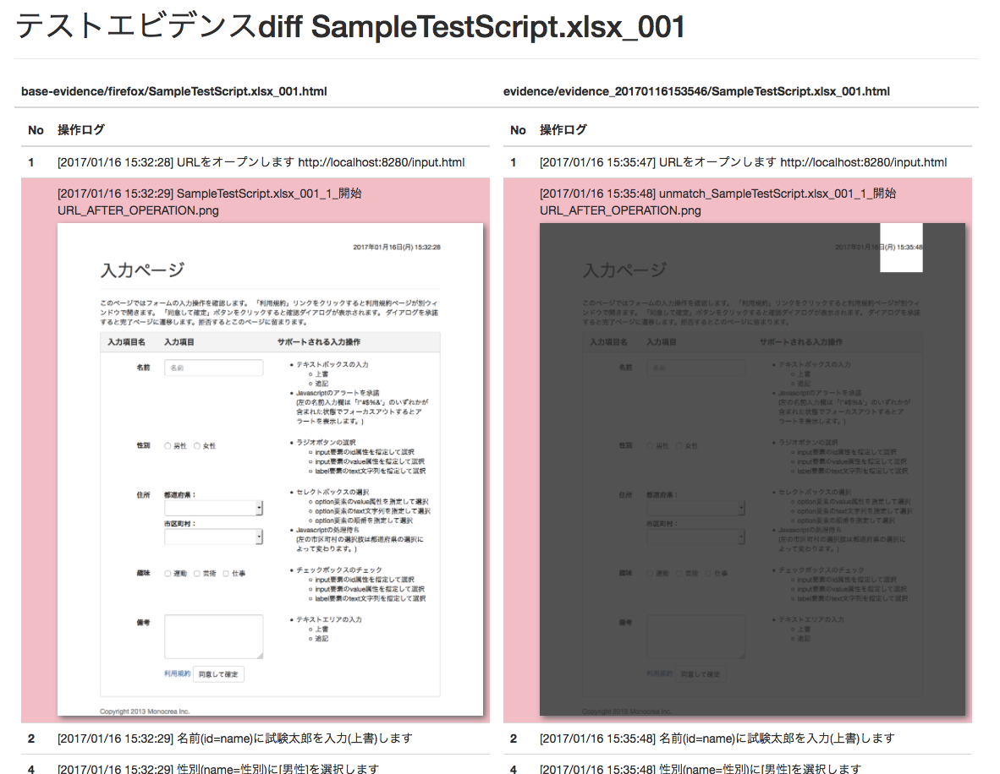比較エビデンスでは、不一致となったスクリーンショットの背景が赤色になって表示されます。 エビデンス右側のスクリーンショットで、色が暗くなっている部分が一致する箇所、暗くなっていない部分が不一致の箇所です。 この例では、スクリーンショット右上のタイムスタンプ表示部分で差異があることがわかります。
基準エビデンスの作成方法
基準エビデンス作成時に使用する以下の機能について説明します。
-
スクリーンショットの一部を比較対象から除外する
-
2つのエビデンスを並べて目視で確認する
スクリーンショットの一部を比較対象から除外する
スクリーンショットにマスクをかけ、一部を比較対象から除外できるようにします。
-
テスト実行後、除外部分を指定したいスクリーンショットのあるエビデンスを開きます。 SIT-WT上から開く場合は、該当のファイルを右クリック＞「開く」をクリックします。

-
ブラウザでエビデンスのスクリーンショット上に付箋を貼って保存します。
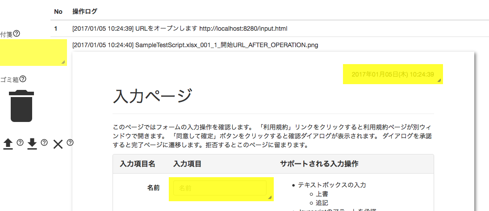 -
SIT-WT上で対象のエビデンスディレクトリを選択してボタンをクリックすると、付箋を貼った形にマスクがかかったスクリーンショットが確認できるエビデンスが生成・表示されます。
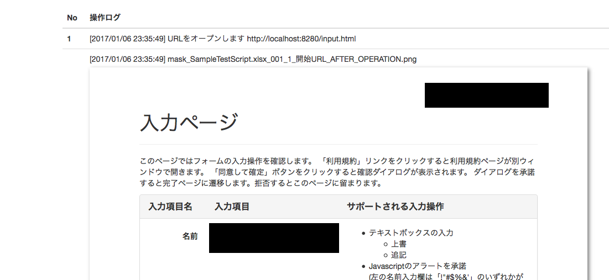 -
続けてボタンをクリックし、基準エビデンスとして保存します。
2つのエビデンスを並べて目視で確認する
SIT-WT上のボタンをクリックすると、2つのエビデンスを並べて確認できる、比較エビデンスが生成・表示されます。
ボタンクリック時にツリー内のディレクトリを選択しておくことで、比較対象とするエビデンスを指定できます。
| 選択ディレクトリ | 比較対象のエビデンス |
|---|---|
エビデンスディレクトリ2つ※ |
選択した2つのディレクトリのエビデンス |
エビデンスディレクトリ1つ |
選択したディレクトリのエビデンスと、同じブラウザの基準エビデンス |
選択なし |
最後に実行したテストのエビデンスと、同じブラウザの基準エビデンス |
※ WindowsではCtrlキー、macOSではcommandキーを押しながら項目をクリックすることで、項目の複数選択が可能です。
また、これらのキーを押しながら選択済みの項目をクリックすると、選択が解除されます。
Jenkinsでテストする
ここではSIT-WTのテストスクリプトをJenkinsで実行するための設定手順を説明します。SIT-WTはMavenに統合されているため、Jenkinsのジョブの作り方は一般的なMavenプロジェクトのものと同じです。手順のおおよその流れは以下の通りです。
-
SIT-WTのプロジェクトをバージョン管理ツールに登録
-
Jenkinsのジョブを作成
-
作成したジョブを実行
手順を実施するにあたり、以下の作業が済んでいることを前提とします。
-
バージョン管理ツールのセットアップ
-
Jenkinsのセットアップ
-
クイックスタートで取得したpom.xmlで、SIT-WTのプロジェクトを作成
-
テストスクリプトの作成
-
バージョン管理ツールのリポジトリを作成、プロジェクト資源を登録
バージョン管理ツールはSubversionやGitなど、Jenkinsが対応しているものである必要があります。
Jenkinsのジョブを作成
Jenkinsでジョブを作成します。
-
ダッシュボードで「新規ジョブ作成」をクリックします。
-
新規ジョブ作成ページで「Mavenプロジェクトのビルド」を選択し、「OK」ボタンをクリックします。
-
ジョブ設定ページでバージョン管理リポジトリの情報とMavenのビルドの情報を設定します。ビルドの「ゴールとオプション」には「clean verify」を指定します。
-
「保存」ボタンをクリックし、ジョブを保存します。
以上でジョブの作成手順は終了です。
接続先の基底URLを変更する
テスト対象の接続先の基底URLはbaseUrlシステムプロパティを使って指定します。baseUrlは「ゴールとオプション」に以下の様に追加します。
-DbaseUrl=http://<test-server>/ clean verify
これにより、テストスクリプト内のopen操作で指定されたパスは全てbaseUrlを基底とするようになります。例えばパスに「input.html」が指定されている場合、open操作はテスト実行時に「http://<test-server>/input.html」を開きます。
テスト実行と結果の確認
作成したJenkinsのジョブを実行します。ジョブが終了すると、ジョブのワークスペースにテスト結果が出力されます。
_ジョブのワークスペース_ /target/evicence_yyyyMMddhhmmss
スクリーンショットに関する注意
SIT-WTのテストをJenkinsのジョブで実行した場合、Javascriptで表示させるダイアログ、つまりwindow.alert, window.confirm等で表示されるダイアログのスクリーンショットは取得できません。 なお、通常のページのスクリーンショットは取得できます。
Android上のブラウザでのテスト
ここではAndroidエミュレータもしくはAndroid端末実機上のブラウザでSIT-WTの自動テストを実行する手順を説明します。 全体の大まかな流れは下記の通りです。
-
実行環境
-
プロパティファイル作成
-
エミュレータの準備
-
実機の準備
-
テストの実行
実行環境
以下のソフトウェアをインストールします。
-
Homebrew ※1
-
Node.js
-
Appium
-
Android SDK
-
Android SDK追加パッケージ
-
Android SDK Platform-tools
-
Android SDK Build-tools
-
SDK Platform (Android X.X(API XX)) ※2
-
Intel x86 Emulator Accelerator(HAXM installer) ※2
-
※1 macOSのみでインストール
※2 エミュレータ上のテストのみでインストール
実行環境の準備 (Windows)
-
android-sdk
以下のサイトからandroid-sdkのzipファイル（android-sdk_rXX.X.X-windows.zip）をダウンロードし、任意のディレクトリに解凍します。
https://developer.android.com/studio/index.html?hl=ja -
Node.js
以下のサイトからNode.jsのインストーラー（Windows Installer (.msi)）をダウンロードし、実行します。
https://nodejs.org/ja/download/ -
Appium
コマンドプロンプトでコマンド`npm install -g appium`を実行します。
-
環境変数
コマンドプロンプトを管理者モードで起動し、以下のコマンドを実行します。
setx ANDROID_HOME "<android-sdkの解凍先ディレクトリ>" -m setx PATH "%PATH%;%ANDROID_HOME%" -m
実行環境の準備 (macOS)
下記コマンドでソフトウェアの入手およびインストールを行います。
ruby -e "$(curl -fsSL https://raw.githubusercontent.com/Homebrew/install/master/install)" brew install node npm install -g appium brew install android-sdk
Android SDK追加パッケージの準備
Android SDK追加パッケージは、Android SDK標準のパッケージ管理マネージャ「Android SDK Manager」を利用して入手・インストールを行います。
-
Android SDK Managerを起動します。
-
Windows
解凍先ディレクトリの「SDK Manager.exe」を開きます。
-
macOS
ターミナルでコマンド
androidを実行します。
-
-
必要なパッケージにチェックを入れて「Install X packages…」ボタンをクリックします。
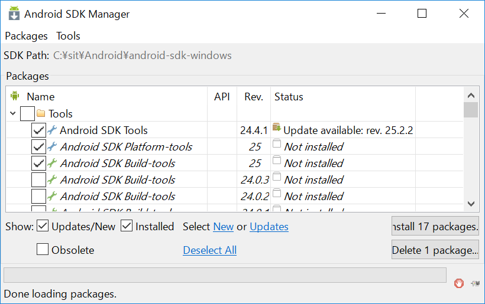 -
ライセンス確認ウィンドウが開くので、同意してインストールを「Install」ボタンをクリックします。
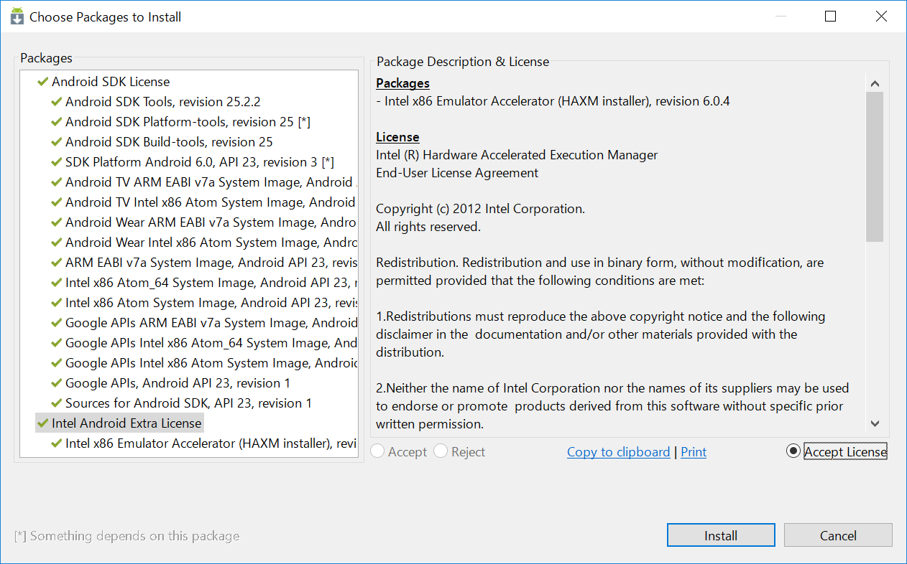
補足
-
Intel x86 Emulator Accelerator(HAXM installer)
Android SDK Managerで指定されているバージョンのものが入手できない場合は、配布サイトから個別に入手する必要があります。 ダウンロード・インストール方法の詳細は以下のサイトを参照してください。
https://software.intel.com/en-us/android/articles/intel-hardware-accelerated-execution-manager
プロパティファイル作成
テスト実行時に必要となるプロパティファイルを作成します。コマンドプロンプトまたはターミナルで下記コマンドを実行します。
cd project_root mkdir -p src¥main¥resources <- Windows mkdir -p src/main/resources <- macOS (echo browserName=browser&echo deviceName=Android) > src/main/resources/capabilities.properties
エミュレータの準備
Android Virtual Device (AVD)の作成
エミュレートするデバイスの環境設定である、AVDを作成します。
-
Android Virtual Device (AVD) Managerを起動します。
-
Windows
解凍先ディレクトリの「AVD Manager.exe」を開きます。
-
macOS
ターミナルでコマンド
android avdを実行します。
-
-
「Create…」ボタンをクリックします。
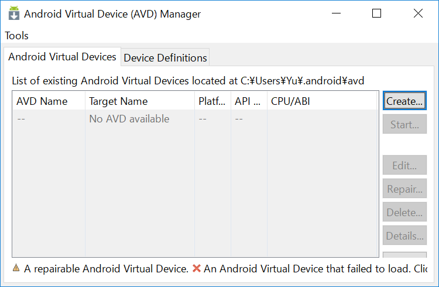 -
以下のように設定します。ここでは例としてTargetに「Android 6.0」、CPU/ABIに「Intel Atom (x86)」を設定しています。入力が終わったら「OK」ボタンをクリックします。
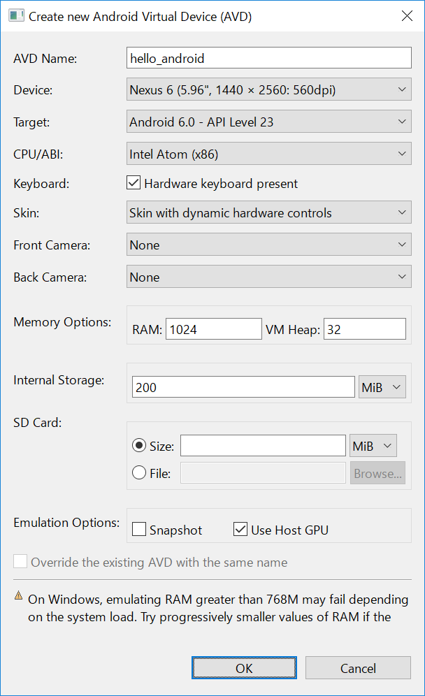 -
確認画面が表示されるので、「OK」ボタンをクリックします。
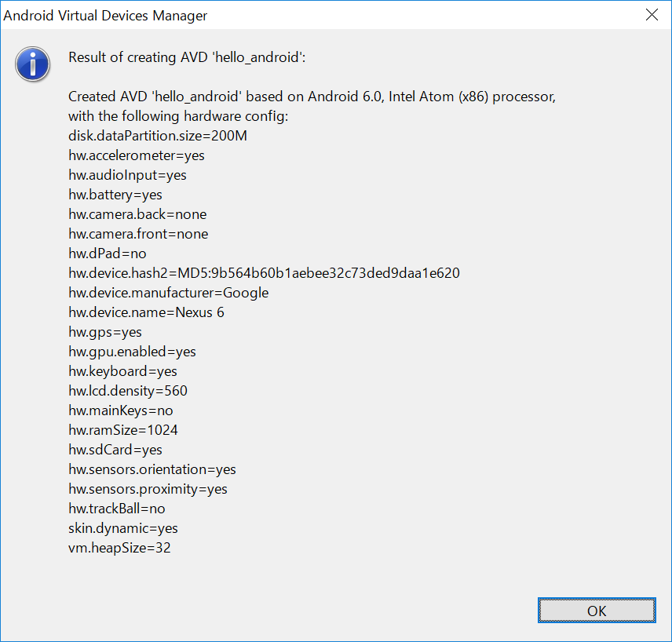
エミュレータの起動
-
AVD Managerで起動したいAVDを選択し、「Start…」ボタンをクリックします。
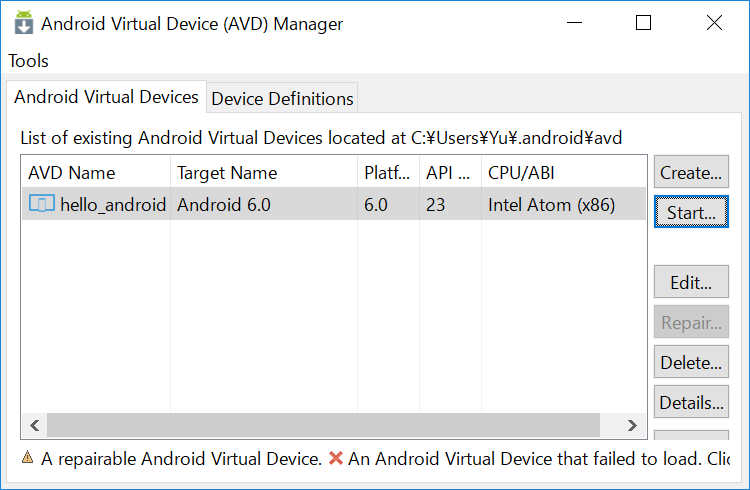 -
「Launch」ボタンをクリックします。
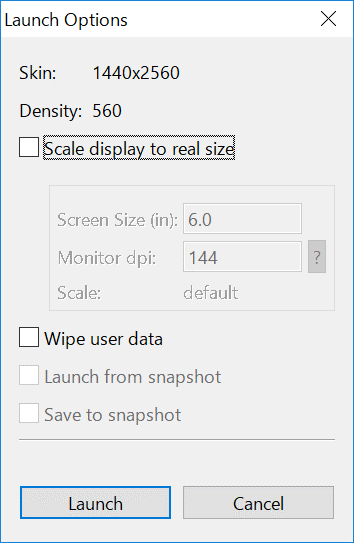 -
エミュレータが起動し、HOME画面が表示されればOKです。
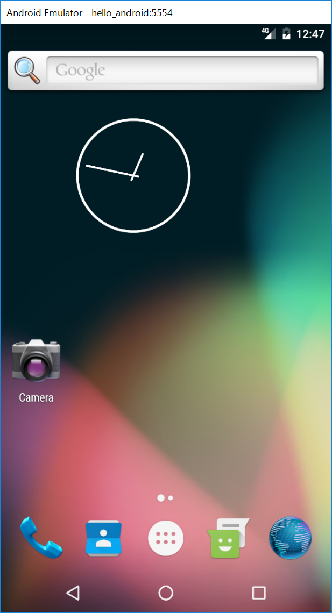
実機の準備
USBデバッグの許可
USBデバッグの許可を有効にし、Appiumから端末へのアクセスを有効にします。
-
テスト対象端末の「設定」メニュー＞「端末情報」を開き、「ビルド番号」を連続でタップします。
指定回数をタップすると、デベロッパーになった旨のメッセージが表示されます。
設定に戻ると「開発者向けオプション」が追加されているはずです。 -
開発者向けオプションを開き、USBデバッグの設定を有効にします。
上記準備ができたら、PCと実機をUSBで接続します。
テストの実行
準備
テスト実行前に、テストの実行に必要となるソフトウェアを起動します。
Appiumの起動 (Windows)
start appium
Appiumの起動 (macOS)
osascript -e 'tell application "Terminal" to do script "export ANDROID_HOME=/usr/local/opt/android-sdk; appium"'
テスト実行
上記ソフトウェア起動後、以下のコマンドを実行します。
cd project_root mvn clean verify -Ddriver.type=android
Mobile-Safariのテスト
ここではiOSシミュレータもしくはiOS端末実機上のMobile SafariでSIT-WTの自動テストを実行する手順を説明します。 全体の大まかな流れは下記の通りです。
-
実行環境
-
プロパティファイル作成
-
実機の準備
-
テストの実行
実行環境
SI-Toolkitの動作環境に加え、以下のソフトウェアをインストールします。
-
Homebrew
-
Xcode
-
Node.js
-
Appium
-
Carthage
-
ios-deploy
-
ios-webkit-debug-proxy
実行環境の準備
下記コマンドでソフトウェアの入手およびインストールを行います。
ruby -e "$(curl -fsSL https://raw.githubusercontent.com/Homebrew/install/master/install)" xcode-select --install brew install node npm install -g appium brew install carthage npm install -g ios-deploy brew install ios-webkit-debug-proxy
-
ruby
上記rubyコマンドはOS X 用パッケージマネージャーであるHomebrewのインストールです。brewコマンドによるパッケージのインストールが可能になります。
-
xcode-select
xcode-selectコマンドを実行するとコマンドライン・デベロッパ・ツールのインストールを促すポップアップが表示されます。「Xcode を入手」ボタンを押下するとApp StoreのXcodeページが表示されるため、「インストール」ボタンを押下して、Xcodeのインストールを開始します。
-
npm
Node.js用パッケージマネージャであるnpmはNode.jsに同梱されているため、個別のインストールは必要ありません。
プロパティファイル作成
テスト実行時に必要となるプロパティファイルを作成します。
3行目のdeviceName、platformVersionは、テストしたい端末に合わせて設定します。
4行目のudidは、実機を使用する場合のみ必要になります。「<UDID>」をテスト対象端末のUDIDに置き換えて実行します。UDIDの確認方法はこちらを参考にしてください。
cd project_root mkdir -p src/main/resources echo -e browserName=Safari\\ndeviceName=iPhone 6s Plus\\nplatformVersion=10.X > src/main/resources/capabilities.properties echo udid=<UDID> >> src/main/resources/capabilities.properties
実機の設定
Web Inspectorの有効化
ios-webkit-debug-proxyで実機上のWebViewにアクセスするため、Web Inspectorを有効にします。
テスト対象端末の「設定」アプリ＞「Safari」＞「詳細」＞「Webインスペクタ」スイッチをONにします。
上記準備ができたら、テスト対象端末をUSBでPCと接続し、ロックを解除した状態にします。
テストの実行
準備
テスト実行前に、テストの実行に必要となるソフトウェアを起動します。
Appiumの起動
osascript -e 'tell application "Terminal" to do script "appium"'
ios-webkit-debug-proxyの起動（実機でテストする場合のみ）
以下のコマンドを実行します。 「<UDID>」はプロパティファイル作成で指定したものと同じ値を設定します。
osascript -e 'tell application "Terminal" to do script "ios_webkit_debug_proxy -c <UDID>:27753 -d"'
テスト実行
上記ソフトウェア起動後、以下のコマンドを実行します。
cd project_root mvn clean verify -Ddriver.type=ios
参考
プロパティファイルについて
プロパティファイル作成ではDesired Capabilitiesと呼ばれる、 Appiumの振る舞いを定義するキー・値のペアを、SIT-WTが使用するプロパティファイルの形式で設定しています。 Desired Capabilitiesについては、Appiumの公式サイトをご確認下さい。
UDIDの確認方法
以下の手順で確認できます。
-
「Appleロゴ」＞「このMacについて」をクリック
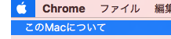 -
「システムレポート…」をクリック
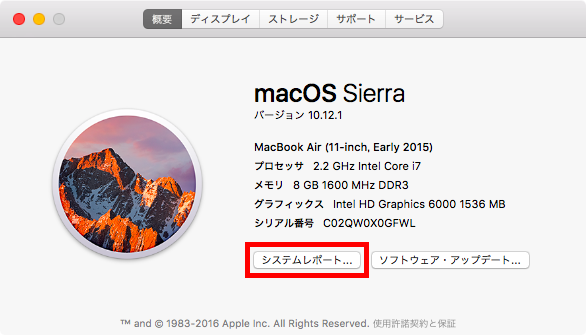 -
「ハードウェア」＞「USB」＞「USB装置ツリー」＞「iPhone」をクリックします。「シリアル番号」と表示されているものがUDIDです。
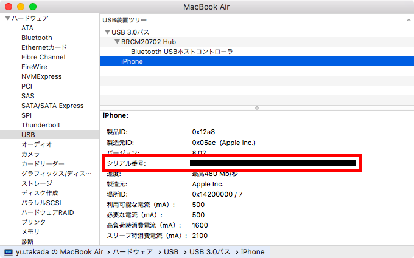
テストの並列実行
SIT-WTは複数のテストスクリプト、テストケースを並列に実行することができます。 並列実行を有効にするには、テスト実行のMavenコマンドにparalellプロファイルを指定します。
mvn verify -P parallel
並列実行に関する設定
並列実行に関する設定はpom.xmlのparallelプロファイルで指定しています。 デフォルトではCPUのコア数と同じ数のスレッドを、テストスクリプトとテストケースに1:1で割り当てる設定となっています。
<profile>
<id>parallel</id>
<properties>
<parallel>classesAndMethods</parallel>
<threadCountClasses>1</threadCountClasses>
<threadCountMethods>1</threadCountMethods>
</properties>
</profile>SIT-WTはテスト実行にMaven Failsafe Pluginを使用していて、並列実行に関する設定もこれに従います。 これらプロパティの詳細な仕様はMaven Failsafe Pluginのサイトを参照してください。
プロキシサーバー使用時の実行方法
ここではインターネット接続にプロキシサーバーを使用する環境でのSIT-WT起動方法について記載します。 プロキシサーバーを使用する場合、FirefoxインストーラーとMavenを所定のフォルダに配置して、SIT-WTを実行する必要があります。
SIT-WT最新版のダウンロード
SIT-WTは起動時に最新版をダウンロードするため、事前ダウンロードが必要となります。 プロジェクトサイトより、SIT-WTの最新版をダウンロードしてください。
Firefoxインストーラー/Mavenの配置
Firefoxインストーラー
下記URLより、Firefoxのインストーラーをダウンロードしてください。
ダウンロードしたインストーラーは、以下フォルダに配置してください。
C:\ProgramData\sitoolkit\repository\firefox\Firefox Setup 47.0.1.exe
Maven
下記URLより、Mavenをダウンロードしてください。
ダウンロードしたMavenは、以下フォルダに配置してください。
C:\ProgramData\sitoolkit\repository\maven\download\apache-maven-3.3.9-bin.zip
Mavenのプロキシ設定
以下フォルダにMavenのsettings.xmlを配置し、ご利用のプロキシサーバーの情報で更新してください。
%HOMEPATH%\.m2\settings.xml
settings.xmlで変更する値は下記のとおりです。
| タグ | 設定値 |
|---|---|
username |
認証ユーザ名 |
password |
認証パスワード |
host |
プロキシサーバーのホスト・IP |
port |
プロキシサーバーのポート |
※認証が不要なプロキシサーバーの場合、username/passwordタグは不要です。
テストするブラウザの変更
ここではSIT-WTをFirefox以外のブラウザで実行する方法を説明します。
ブラウザを指定してテストを実行
VM引数driver.typeを指定してテストを実行します。 以下はChromeで実行する場合の例です。
mvn verify -Ddriver.type=chrome
テスト開始時に、指定したブラウザのSelenium Driverが自動的にインストールされます。
Selenium Driverは以下のディレクトリにブラウザ別に保存されます。
-
C:¥ProgramData¥sitoolkit¥repository¥selenium
driver.typeの指定
テスト実行するブラウザとVM引数driver.typeの値は以下を参照してください。
| ブラウザ | driver.typeの値 |
|---|---|
Chrome |
chrome |
Internet Explorer |
ie |
Microsoft Edge |
edge |
SIT-WTが使うSeleniumのバージョンを変更する方法
ここではテストに使用するSeleniumのバージョンを変更する方法について説明します。
テストの実行には、Seleniumのライブラリが、使用するブラウザをサポートしているバージョンのものである必要があります。
Seleniumのバージョンは、クイックスタート「サンプルテストの実行」 1行目のコマンドでダウンロードしたpom.xmlにプロパティとして定義されています。selenium.versionに使用するバージョンを指定します。
<properties>
:
<selenium.version>3.X.X</selenium.version>
:
</properties>
Firefoxのバージョンに対応するSeleniumのバージョンを調べるにはSeleniumHQが公開しているCHANGELOGを参照してください。
実行時のプロパティ
SIT-WTはプロパティを指定することで実行時の挙動を変えることができます。 ここではそのプロパティについて説明します。
指定方法
プロパティファイル
プロパティは以下のプロパティファイルで指定することができます。 ファイル形式はJavaのプロパティファイル形式です。
project_root/src/main/resources/sit-wt.properties
コマンド
プロパティはMaven実行時のVM引数として指定することもできます。
mvn verify -Dkey=value
指定可能なプロパティ
SIT-WTでは以下のプロパティが指定可能です。
| プロパティ | 説明 |
|---|---|
baseUrl |
テストスクリプトのopen操作で指定したURLの先頭に付与する文字列です。 Default : src/main/webapp |
driver.type |
Selenium Driverの種類、つまりテストに使用するブラウザの種類です。chrome、edge、firefox、ie、safari、remote、android、iosのいずれかが指定可能です。 Default : firefox |
window.width |
ブラウザのウィンドウ幅です。Default : 900 |
window.height |
ブラウザのウィンドウ高さです。Default : 900 |
window.top |
ブラウザのウィンドウ位置のy座標です。Default : 0 |
window.left |
ブラウザのウィンドウ位置のx座標です。Default : 0 |
window.shift.top |
テストを並列実行した場合のブラウザのウィンドウ位置y座標のずれ幅です。Default : 10 |
window.shift.left |
テストを並列実行した場合のブラウザのウィンドウ位置y座標のずれ幅です。Default : 50 |
window.resize |
trueを指定すると、スクリーンショット取得の際にウィンドウサイズをページのコンテンツサイズに合わせて自動調節します。Default : false |
implicitlyWait |
WebDriverのブラウザ操作APIの戻り値を待つ時間、つまり、WebDriver.manage().timeouts().implicitlyWaitに指定する値です。(ミリ秒) Default : 10000 |
operationWait |
テストステップ間で処理を待機する時間(ミリ秒)です。Default : 0 |
dialogWaitInSecond |
JavaScriptのダイアログが表示されるまで処理を待機する時間(秒)です。 Default : 3 |
pageobj.dir |
テストスクリプトのinclude操作で読み込む別テストスクリプトのパスの基底です。Default : pageobj |
screenshot.resize |
trueを指定するとスクリーンショット(png)のサイズを自動調節します。調整後のサイズは、スクリーンショットに含まれる操作項目が全て含まれる最小のもの + 余白になります。 Default : false |
screenshot.padding.width |
screenshot.resize=trueの場合のスクリーンショットの余白幅です。Default : 200 |
screenshot.padding.height |
screenshot.resize=trueの場合のスクリーンショットの余白高さです。Default : 200 |
selenium.screenshot.pattern |
Selenium IDEのスクリプトを変換する際に、スクリーンショットを取得するCommandのパターン(正規表現)です。このパターンに一致するCommandのテストステップのスクリーンショット列には「前」が入力されます。Default : .*AndWait$ |
appium.address |
AppiumサーバーのURLです。Default : http://127.0.0.1:4723/wd/hub |
hubUrl |
Selenium Grid HubサーバーのURLです。Default: |
SIT-WTによる自動テストの動作原理
SIToolkit for Web Testing (SIT-WT)はSeleniumをベースとしたWebアプリケーションの自動テストモジュールです。ここではSIT-WTによる自動テストの種類、及びそれらの動作原理について説明します。おおまかに以下の流れで解説します。また、最後に対応ブラウザ・動作環境についても説明します。
-
Selenium WebDriverについて
-
SIT-WTによる自動テスト
-
モバイル端末の自動テスト
-
SIT-WTで可能な自動テストおよび動作環境
Selenium WebDriverについて
SIT-WTのテスト実行では、Selenium WebDriverを使用しています。Selenium WebDriverとはプログラミング言語のコードからブラウザ操作が可能なライブラリです。Java、Ruby、JavaScriptなど、各言語のライブラリとして提供されています。SIT-WTはJavaで実装されているため、Java版を使用しています。単にWebDriverと呼ばれることが多いため、以降ではWebDriverと表記します。
WebDriverの種類
WebDriverはブラウザごとに固有の実装がされています。利用したいブラウザに応じて切り替えることにより、様々なブラウザでテスト実行をすることが可能です。現在SIT-WTで使用可能なWebDriverは以下の通りです。
-
FireFoxDriver
-
ChromeDriver
-
InternetExplorerDriver
-
SafariDriver
-
AndroidDriver
-
iOSDriver
SIT-WTではプロパティファイル上で対象のWebDriverを指定することで、テストに使用するWebDriverを切り替えることができます。
WebDriverのアーキテクチャー
WebDriverはプログラミングで記述されたコマンドを発行するクライアント側のロジックと、コマンドを受信してブラウザ操作を行うサーバ側のロジックで構成されています。このコマンドはJSON Wire Protocolと呼ばれるHTTP通信をベースとした独自プロトコルでやり取りされています。 クライアント側から発行されたコマンドがサーバ側へ送信され、ブラウザ操作の結果は再び通信によってクライアント側へ返されます。

SIT-WTによる自動テスト
SIT-WTによる自動テストは、大まかに以下の流れになります。
-
ExcelもしくはCSV形式のテストスクリプト読み込み
-
操作ログ、スクリーンショット取得※
-
読み込んだテストスクリプトをWebDriverの形式に変換し、操作コマンドを発行
-
レスポンス受領
-
上記2〜4をテストスクリプトに記載された全コマンドに対し実行
※スクリーンショットは任意の操作に対しての取得ができ、また操作コマンドの実行後に取得することも可能です。 スクリーンショット取得対象の操作および取得タイミングは、いずれもテストスクリプト内で任意に指定することができます。

モバイル端末の自動テスト
SIT-WTはスマートフォン、タブレットなどのモバイル端末の自動テストもサポートしています。 モバイル端末のテストではAppiumと呼ばれるツールを使用します。 ここではAppiumがSIT-WTからWebDriverの操作コマンドを受信してから、シミュレータもしくはモバイル端末実機上でテストが実行されるまでの動作について説明します。
Appium
Appiumはネイティブ、 ハイブリッド型モバイルアプリのために開発されたオープンソースのテスト自動化ツールです。 Node.js上でサーバとして動作します。WebDriverのクライアントライブラリから発行されたコマンドをHTTP通信ベースのMobile JSON wire Protocolでやりとりします。Appiumサーバはクライアントが接続してくるとiOSの「Automation」やAndroidの「UI Automator」を利用して、モバイルアプリやモバイルブラウザを操作できるようになります。

AndroidとiOSで使用するソフトウェアが異なるため、それぞれについて以下で説明します。
Androidアプリのテスト
-
UI Automator
Androidアプリ開発の開発キットであるAndroid SDKに標準で含まれているテスト自動化ツールです。 Appiumから渡されたコマンドをシミューレータもしくは実機上で実行します。コマンドが実行された後はレスポンスを受け取り、UI Automatorレスポンス形式でAppiumへ転送します。
iOS(Mobile Safari)のテスト
-
Apple instruments
OS XやiOSのコードを動的にトレース（動作を追跡）する、性能分析/テストツールです。テスト実行の際には、instrumentsが提供している機能のうちのひとつである「Automation」を使用しています。AutomationではJavaScriptのプログラミングインターフェースで、シミューレータもしくは実機上のアプリが実行するアクションを指定することができます。
-
SafariLauncher
Appiumに同梱されている、Mobile Safariを起動する機能を持つiOSアプリです。 テスト開始時にこのアプリを使用し、Mobile Safariの起動も自動化します。
-
ios-webkit-debug-proxy
iOS端末実機上のMobile Safariを操作するためのソフトウェアです。Mobile Safariの操作が可能なChrome Remote Debugging ProtocolをWebインスペクタのプロトコルに変換し、実機の操作を実現します。実機上ではChrome Remote Debugging Protocolにセキュリティ上の制限があり直接アクセスできないため、実機を使用するテストの場合にのみ使用します。
SIT-WTで可能な自動テストおよび動作環境
自動テスト対応ブラウザ
テスト実行に使用可能なブラウザです。
-
Firefox
-
Google Chrome
-
Internet Explorer
-
Safari(Mobile Safari)
対応モバイルアプリの種類
自動テストが可能なモバイルアプリの種類です。
-
Android
-
ネイティブアプリ
-
ハイブリッドアプリ
-
-
iOS
-
ハイブリッドアプリ
-
SIT-WTの対応OS
SIT-WTを動作させることができるOSです。
-
Windows
-
Mac OS
SIT-WTの動作に必要なソフトウェア
-
JDK 1.8.x
-
Maven 3.3.x
-
Firefox、Google Chromeなど、テストを実行するためのブラウザ
モバイル端末のテストでは上記以外に追加でインストールが必要なソフトウェアがあります。 詳細は下記を参照してください。
-
Androidの場合 → Androidアプリのテスト
-
iOSの場合 → Mobile Safariのテスト